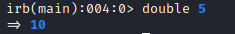

Methods
A method is a block of code with a name
A method should always be defined on an object on which it is going to be invoked (remember that Ruby is a full Object Oriented Programming language)
Syntax:def <method name>(<arguments list>)
<code block>
end
to pass an argument to a method we can use these syntaxs:
◇ method(argument)
◇ method argument
example:Alias for methodsDefault values for parameters of our methods